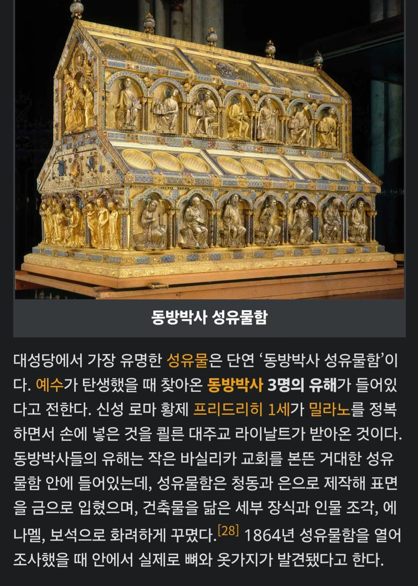

동방박사의 유해가 있다는 쾰른 대성당의 성유물함
신성하지도^로마도^제국도^ 아닌 시절 밀라노 정복하면서 얻은 유물이라는데 예루살렘 갔다가 고향으로 돌아간 동방박사가 왜 밀라노에 묻혔는지에 대해선 일언반구도 설명이 없다
사실 불교에서 부처 사리라고 주장하는게 넘치듯 천주교의 고질병적 문제인데, 예를 들어 12사도 베드로의 손가락뼈 성유물은 지금까지 손가락 수십개정도 나왔다고 한다

동방박사의 유해가 있다는 쾰른 대성당의 성유물함
신성하지도^로마도^제국도^ 아닌 시절 밀라노 정복하면서 얻은 유물이라는데 예루살렘 갔다가 고향으로 돌아간 동방박사가 왜 밀라노에 묻혔는지에 대해선 일언반구도 설명이 없다
사실 불교에서 부처 사리라고 주장하는게 넘치듯 천주교의 고질병적 문제인데, 예를 들어 12사도 베드로의 손가락뼈 성유물은 지금까지 손가락 수십개정도 나왔다고 한다
예수 못인 성정이라거나 예수 십자가인 성십자가도 ㅈㄴ 많잖슴ㅋㅋㅋㅋ
예수가 사실 헤카톤케이레스였다거나 골고다 언덕이 사실 통나무숲이었다거나 드립 많음ㅋㅋㅋ
진신사리도 대부분 가짜일껄?
근데 동방이 지금의 어느나라야? 인도나 이집트쪽인가?
붓다가 예수보다 500년 일찍태어났으니
불교 경전 교리를 전파하는 사람들을 서방에 보냈을수도 있겠네
알 수 없음 성경에는 아주 간단한 내용밖에 안 써있음 출신도 안 써있고 몇 명인지도 안 적혀있는데 세 가지 물건을 바쳐서 세 명이라고 생각만 할 뿐임
예수가 태어난게 베들레햄인데 거기서 동쪽이니까 아라비아나 메소포타미아나 이란 쪽이라고 보는거 같음 인도는 너무 멀지
그리고 번역은 박사로 돼있는데 실제 의미는 마술사, 점성술사라서 조로아스터교 사제라고 보는 시각도 있는것 같음
참고로 부처님 사리는 저런식으로 제작하지 않았고 법신사리라고 해서 부처님의 가르침이 쓰여 있으니 사리만큼 성스러운거 아님? 이라는 논리로 불경을 대신 봉안했다
불탑을 해체하면 안에서 불경이 나오는 이유
뭐 진신사리도 있긴하니까 국내에서 진신사리 보관하는곳만 해도 10곳 넘잖아
진신사리가 부족하니 사리를 복제하자!가 아니고 다른 유물을 대신 봉안하자고 한거지
손이 한 50개일수도 있는건데 억까모지
호감고닉 피해자들 모임
서방박사는 왜 없는가
나에게 성궤와 롱기누스의 창을 다오
캣홀릭 성유물은 믿는게 아니다
카톨릭이 한창 제정신 아니던 시절
교회 세우려면 성유물이 필요한데 시발 성유물이라는게 그렇게 흔하면 성유물이 아니죠 그럼 어떡하지
이지랄하다가 성유물 복사버그를 창안함
이지랄이 존나 답이 없으니 종교개혁때 야 시발 이게 도대체 우상숭배랑 다른게 뭐냐 얘기 튀어나와서 개신교는 성유물 취급 안하는거
카톨릭 정상화 후에도 성유물 안치조항은 삭제했어도 성유물을 버리지 않은 이유중 하나는 아무래도
교황청 이새기들은 진짜를 갖고있긴 하거든...
사혼의 손가락인가